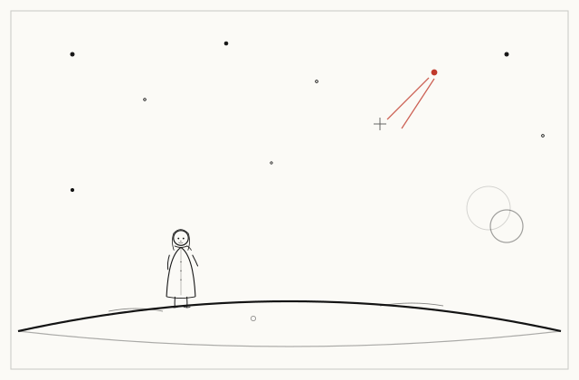
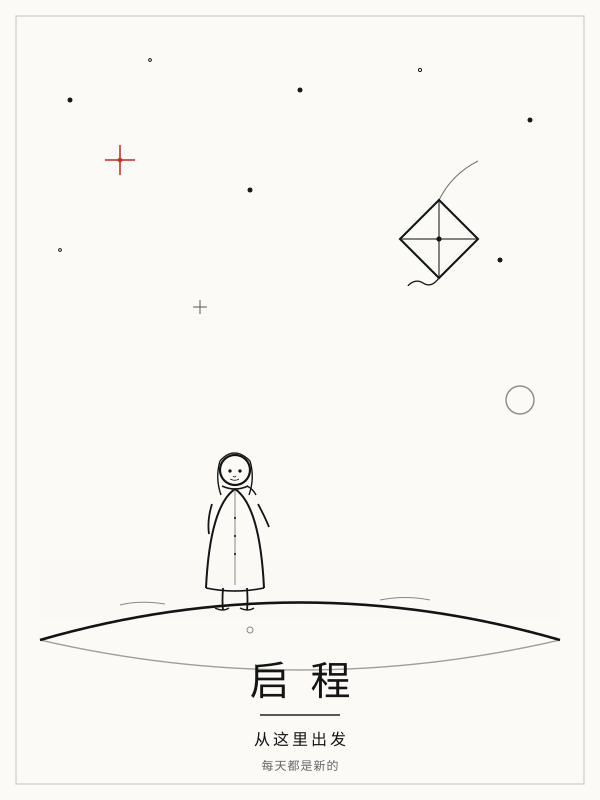
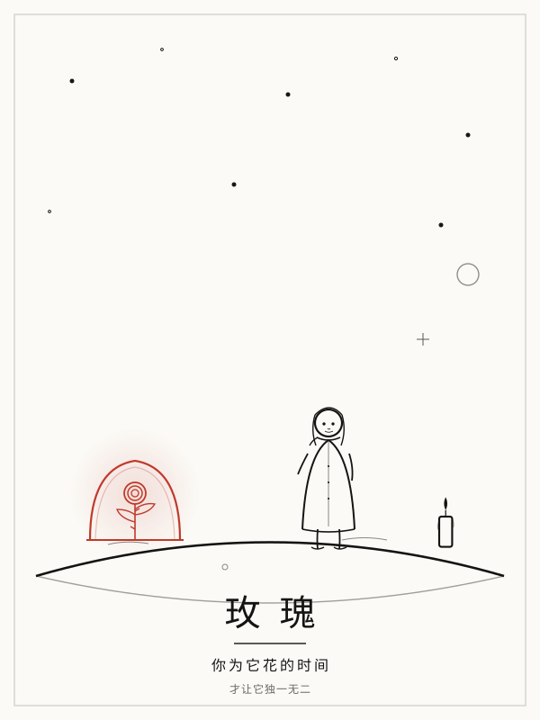
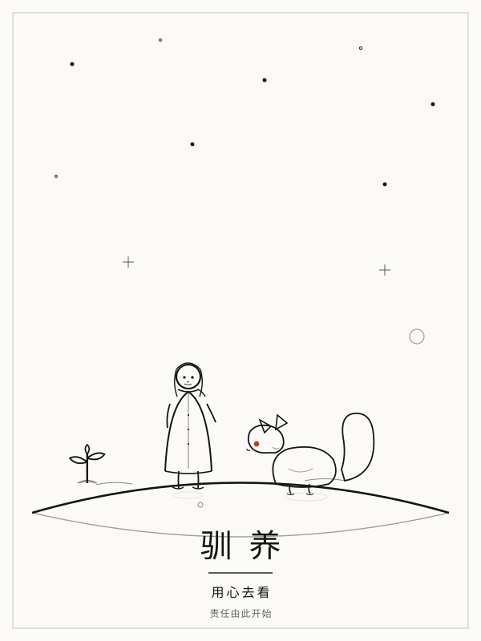
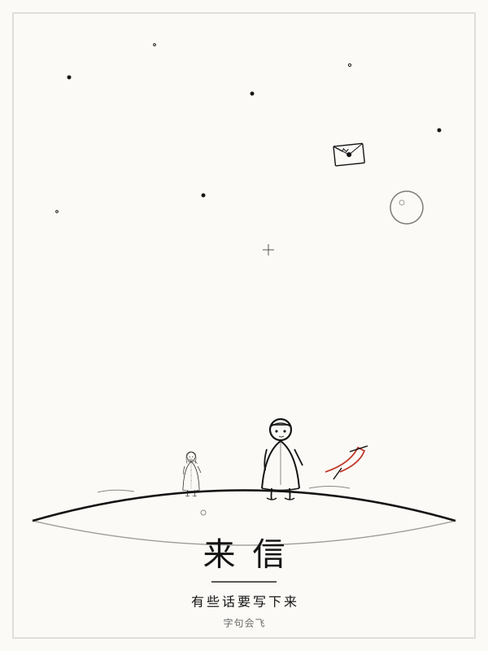
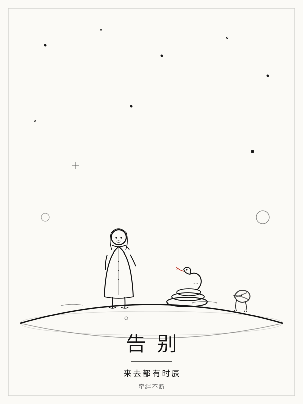
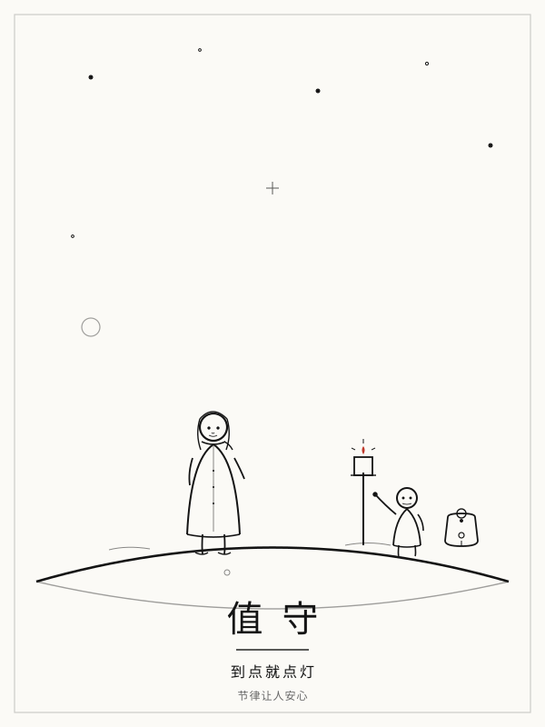
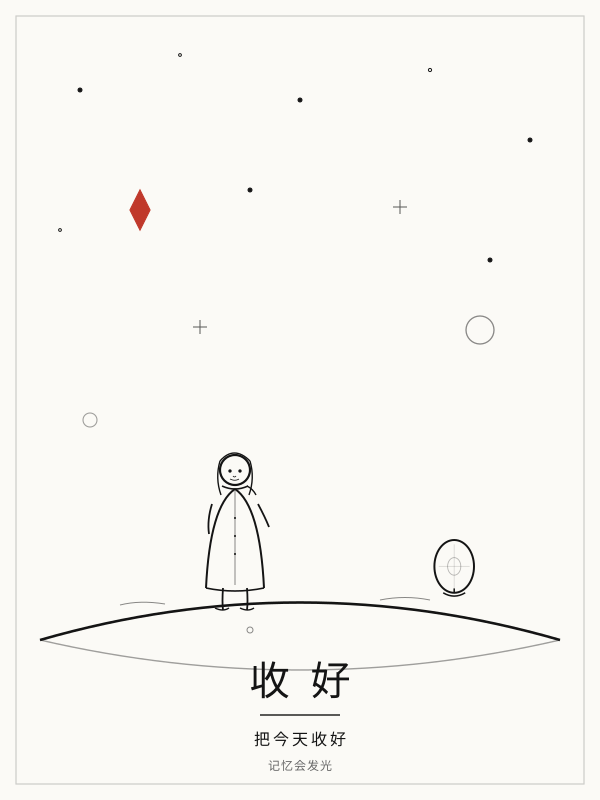
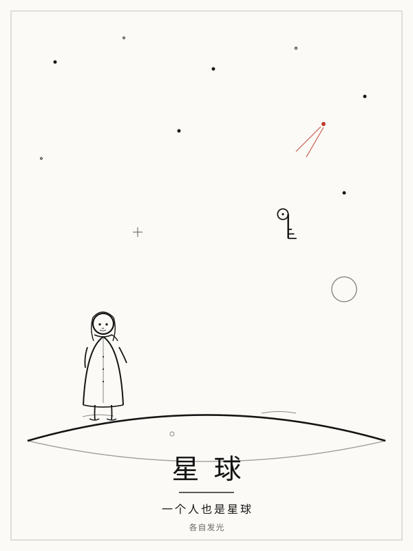

Petit Prince
不是把童话贴到界面上，而是把《小王子》的墨线、羊皮纸和一点朱砂，变成一套能安静工作的界面。插图是页面的一部分，不是页面的装饰。
#C9593F#B33A2B#8C2A1E#23201A#8A5A0B#F6F0E3
先有纸，再有界面
《小王子》的原书不是彩色插画集，而是墨线速写加一点手工上色。所以这套主题的底色不是白，而是偏暖的羊皮纸；正文不是纯黑，而是带一点棕的墨；品牌色不是大面积的橙，而是只在关键处落一笔的朱砂。
朱砂只负责「需要立刻看见」的事：主按钮、未读、待审批、当前选中。它出现得越少，出现时就越有分量。星金留给奖励与等级，绿色留给成长与通过，蓝色留给信息与链接——语义色不参与品牌色的统一，才能继续被看见。
页面顶部的故事带是整个主题的签名：一条 390×84 的横向速写，按模块换客人带来的道具（信、风筝、铃铛、幼苗、镜子、绳结、灯柱、星球、星座）。它不抢内容，只在你滑到页面顶部时，提醒你这页在讲什么。
同一个故事，不同的阅读场景
边带班边用手机；暖底降低长时间使用的刺激，朱砂标记待办。
#B33A2B#C9593F#8C2A1E#F5E0D8#F6F0E3#FFFDF6通勤或晚上刷手机；比老师端多一分玫瑰色，孩子的内容仍然清楚。
#A63A45#C25A64#7E2833#F4DEE1#F7F1E6#FFFEFA三条用色规则
主按钮、未读、待审批、当前选中。朱砂负责「现在需要你」。
小小艺术家、Lv.5、积分增加。金色面积始终小于朱砂。
已同步、已通过、出勤。语义色保留，才不会被品牌色吞掉。
WCAG 2.1 · 正文目标 AA
| 组合 | 用途 | 对比度 | 判定 |
|---|---|---|---|
| #23201A / #FFFDF6 | 正文 / 暖白卡 | 15.96 : 1 | AAA |
| #23201A / #F6F0E3 | 正文 / 羊皮纸 | 14.30 : 1 | AAA |
| #FFFFFF / #B33A2B | 白字 / 老师端主按钮 | 5.90 : 1 | AA |
| #FFFFFF / #A63A45 | 白字 / 家长端主按钮 | 6.34 : 1 | AA |
| #8C2A1E / #F5E0D8 | 深朱砂字 / 朱砂洗 | 6.71 : 1 | AA |
| #8A5A0B / #F6E9C8 | 星金字 / 星金浅底 | 4.91 : 1 | AA |
| #6B6354 / #FFFDF6 | 次级文字 / 暖白卡 | 5.83 : 1 | AA |
亮橙原稿中「白字压亮橙」只有 2.35–2.80:1；小王子主题把主按钮改成白字压深朱砂（5.90 / 6.34:1），浅底上的朱砂字改用深朱砂（6.71:1）。朱砂只做填充与小面积强调，不用作长段正文。
同一篇里每位客人只出现一次








分镜遵循 .claude/skills/petit-prince-story 的规则：墨线 #141414、纸底 #fbfaf6、每幕恰好一个朱砂焦点、星点 ≤12 颗、小行星 ≤2 颗。页面里的 12 条故事带是同一套视觉语言的无客人版本，只保留道具与地平线。
左：小王子 · 右：原亮橙